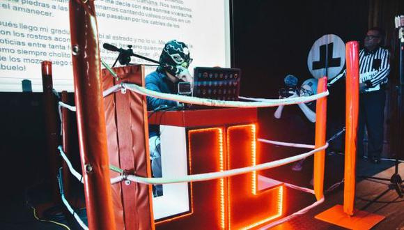
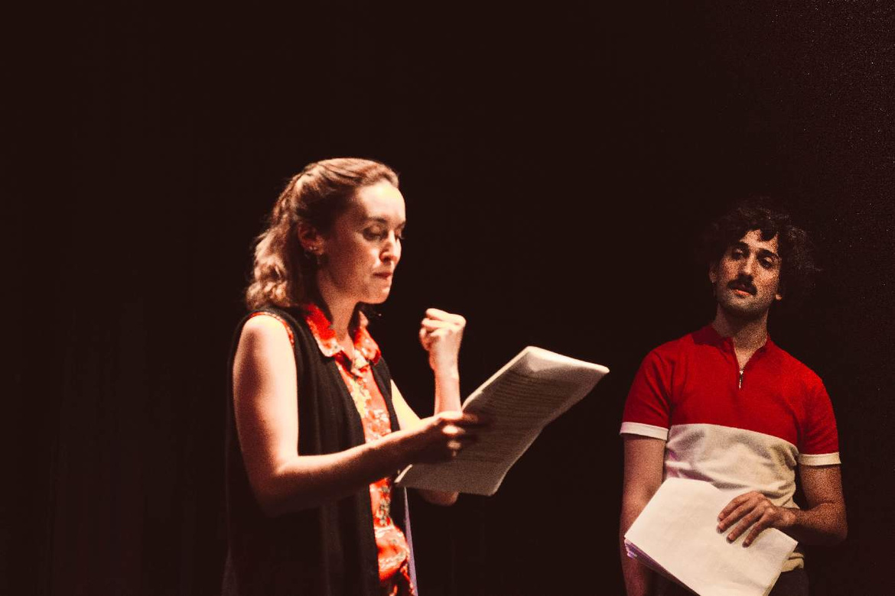

La escritura
Crear un texto en directo, sin detenerse.
 <SCRI> B
<SCRI> B


¿Cómo escenificar la escritura?
¿Cómo gamificar la escritura?
EL JUEGO · 3 / 3
El texto se proyecta y el público puede seguir su creación en directo.
Escribir también se convierte en algo que mirar.
GUÍA DEL ESPECTÁCULO
Todo lo que el equipo necesita saber antes de abrir las puertas.
 www.scribshow.es/musaLISTA PARA INSPIRARLA HISTORIA YA ES DE TODXS
www.scribshow.es/musaLISTA PARA INSPIRARLA HISTORIA YA ES DE TODXSDos voluntarias para crear un texto en directo y probar el juego.
Escanea el QR con tu móvil y participa.
scribshow.es/musaElige equipo y envía palabras para inspirar a las escritoras.
RONDA FINAL
Abrimos el diálogo sobre escritura en vivo, juego y creación escénica.
×